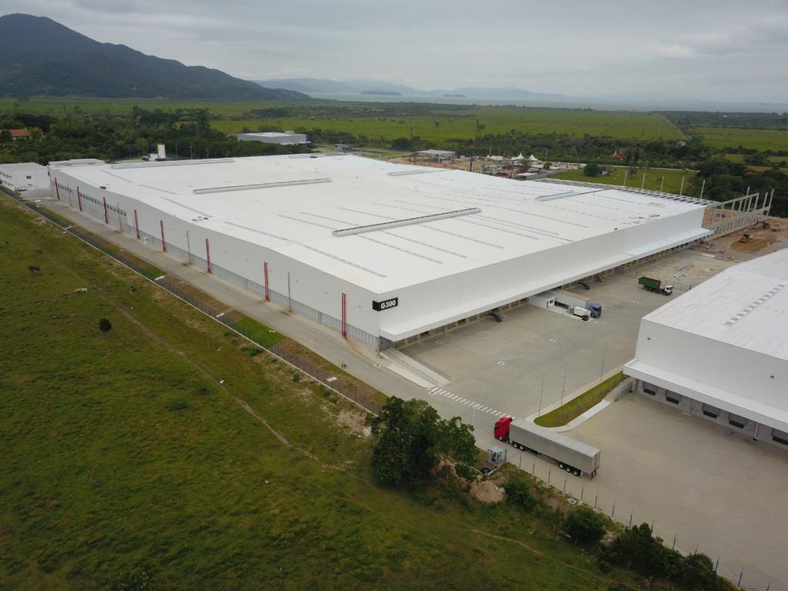
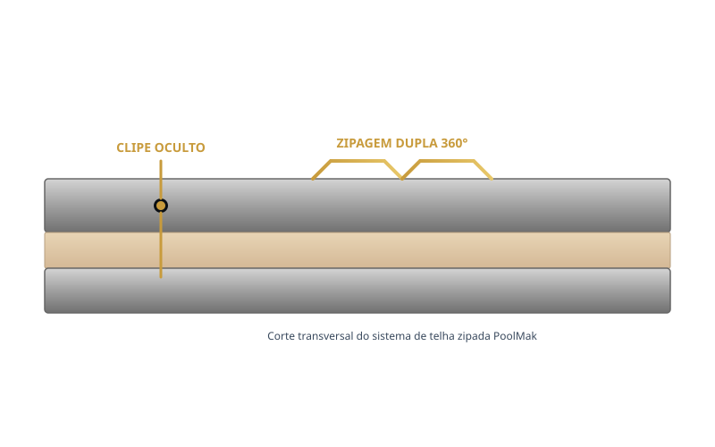
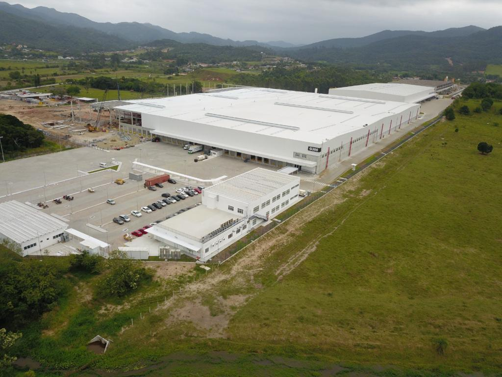
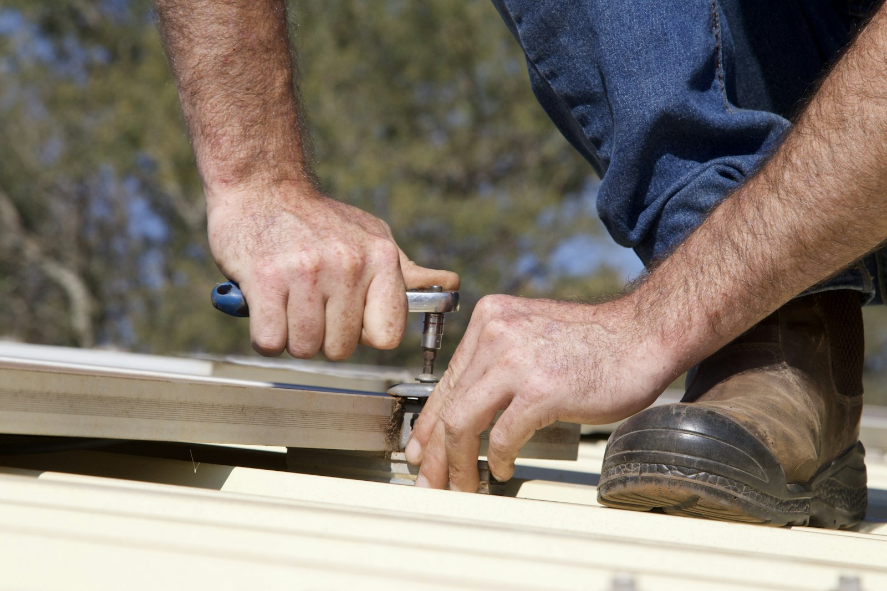
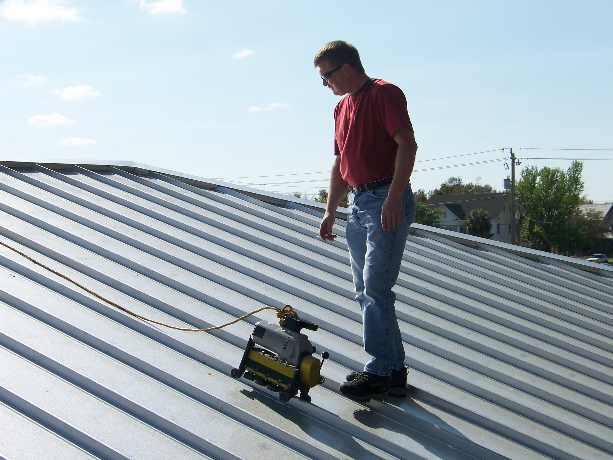
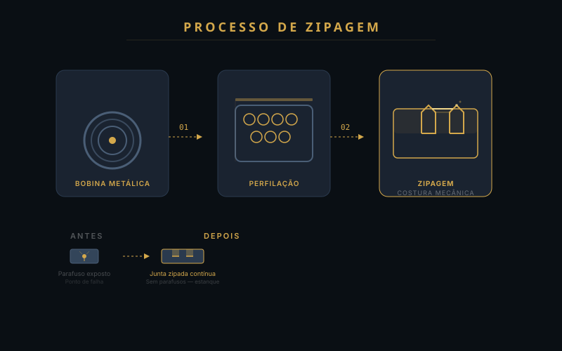
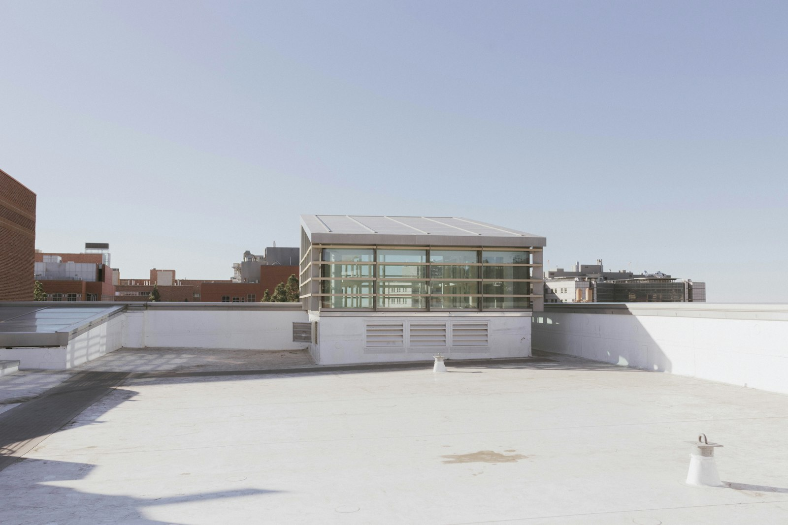

Sistema zipado com estanqueidade absoluta. Perfilação contínua em obra, clipes ocultos e zipagem mecanizada — a engenharia da vedação total.
Diferente das telhas convencionais — que dependem de parafusos, fitas de vedação e emendas — a telha zipada PoolMak é unida por uma costura mecânica contínua que percorre toda a extensão da cobertura. Sem furos, sem parafusos aparentes, sem pontos de falha.
O perfil metálico é conformado diretamente na obra por máquinas portáteis, em painéis de até 100 metros contínuos, eliminando emendas transversais e garantindo estanqueidade total.




Da bobina de aço à cobertura finalizada em 4 etapas.
A perfiladeira com a bobina de aço é içada até a cobertura. O perfil metálico é conformado in loco no comprimento exato do projeto.
Clipes ocultos de aço inox são fixados às terças sem perfurar a chapa, permitindo dilatação térmica livre sem comprometer a vedação.
A zipadora elétrica percorre a junta entre as telhas, deformando as bordas em um duplo zipamento 360° que sela a cobertura de forma monolítica.
Resultado: uma cobertura contínua, sem parafusos aparentes, sem emendas, com estanqueidade certificada e acabamento industrial de alto padrão.

Zero parafusos, zero perfurações. A zipagem cria uma junta contínua que elimina qualquer risco de infiltração.
Painéis contínuos fabricados na obra, sem emendas longitudinais. Ideal para grandes coberturas industriais.
Permite projetos com coberturas planas ou inclinação suave — algo inviável para telhas trapezoidais comuns.
Aço galvalume AZ150 com revestimento PVDF. Vida útil superior a 30 anos em ambiente industrial sem manutenção.
Versão sanduíche com núcleo PIR, lã de vidro ou lã de rocha. Conforto térmico e redução de ruídos.
Sem parafusos aparentes. Linhas limpas e modernas que valorizam qualquer projeto arquitetônico.

Preencha o formulário abaixo. Nossa equipe técnica retorna em até 24h com um orçamento personalizado para seu projeto.